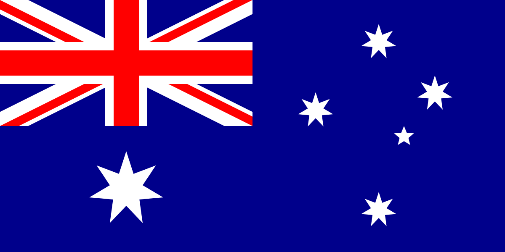

EMU:986 Emu's died in the war.
HUMAN: An entire army lost to a flock of birds.
Over all this war was pretty silly. Silly in the fact that a countrys army lost a war to a flock of birds. This must have been an embaressment to austrailia since after the war, the Emu's were taken care of by the civilians.
